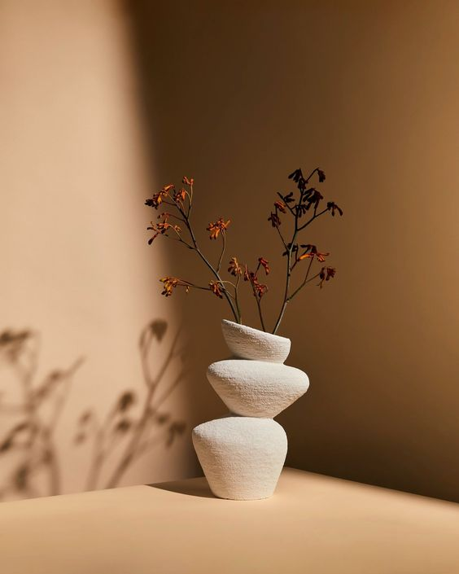
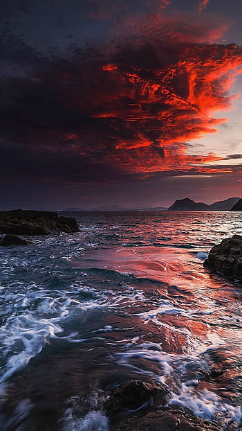

Kişisel Birikimim
Merhaba! Ben Ömer Faruk Öztürk, fotoğrafçılığa olan tutkum yıllar içinde büyüyerek profesyonel bir kariyere dönüştü. Genç yaşlarımda, basit bir dijital kamera ile başladım. Doğa manzaralarını ve günlük hayatın içindeki küçük anları yakalamaya çalışarak, görsel estetiğe olan ilgimi keşfettim.
Eğitimim sırasında aldığım sanat dersleri, fotoğrafçılığın teknik yönlerini anlamamda büyük bir katkı sağladı. İlk sergimi açtığımda, izleyicilerin bakış açısını etkilemek için anı yakalamanın önemini anladım. Zamanla portre ve etkinlik fotoğrafçılığına yöneldim; düğünlerde ve özel günlerde insanların en mutlu anlarını ölümsüzleştirmek benim için bir ayrıcalık oldu.
Müşterilerimle kurduğum samimi iletişim sayesinde, onların hikayelerini en iyi şekilde anlatmaya çalışıyorum. Her fotoğrafımda, bir duyguyu ve anıyı yakalamak için özen gösteriyorum. Sosyal medya aracılığıyla paylaştığım işlerim, hem geniş bir kitleye ulaşmamı sağladı hem de bana birçok yeni fırsat sundu.
Bugün, fotoğrafçılığımın yanı sıra, genç yeteneklere ilham vermek ve onlarla deneyimlerimi paylaşmak için de çaba gösteriyorum. Çünkü fotoğrafçılık, benim için yalnızca bir meslek değil, aynı zamanda yaşamı dolu dolu yaşamak için bir yol. Hayatın her anında güzellikleri yakalamaya devam etmek için sabırsızlanıyorum.

Obje Fotoğrafçılığı
Obje fotoğrafçılığı, detaylara ve kompozisyona büyük önem gerektiren bir alandır. İşte obje fotoğrafçılığı yaparken dikkat edilmesi gereken bazı önemli noktalar:
1. Aydınlatma
Doğal Işık: Mümkünse doğal ışık kullanın. Işık kaynağının açısını ve yoğunluğunu ayarlamak, objenin dokularını ve detaylarını vurgulamak için önemlidir.
Yumuşak Işık: Sert gölgelerden kaçınmak için yumuşak ışık kaynakları (softbox veya difüzör) kullanın.
Işık Yönü: Işığı objenin üzerine doğru yönlendirerek, objenin üç boyutlu görünümünü artırabilirsiniz.
2. Arka Plan Seçimi
Dikkat Dağıtmayan Arka Plan: Objenizin öne çıkmasını sağlamak için sade ve dikkat dağıtmayan arka planlar tercih edin.
Renk Uyumu: Arka plan renginin objenizle uyumlu olmasına özen gösterin. Zıt renkler bazen objeyi ön plana çıkarabilir.
3. Kompozisyon
Kuralı Uygulayın: Üçler kuralı, objenizi çerçevenin farklı noktalarına yerleştirerek ilgi çekici bir kompozisyon oluşturmanıza yardımcı olabilir.
Farklı Açıdan Çekim: Objenizi farklı açılardan çekerek en iyi görünümünü yakalayın. Yüksekten, alçaktan veya yanlardan çekim yapmayı deneyin.
4. Detaylar
Odaklama: Objenin detaylarını net bir şekilde göstermek için doğru odaklamayı yapın. Gerekirse makro lens kullanarak ince detayları vurgulayın.
Yüzey Temizliği: Çekim öncesinde objenin yüzeyinin temiz ve pürüzsüz olmasına dikkat edin. Lekeler ve tozlar, fotoğrafın kalitesini olumsuz etkileyebilir.
5. Ekipman
Doğru Lens Seçimi: Objenizin boyutuna ve detaylarına göre uygun lensi seçin. Makro lensler küçük nesneler için idealdir.
Tripod Kullanımı: Sabit bir çekim için tripod kullanarak, titremeyi azaltabilir ve netlik elde edebilirsiniz.
6. Post-Prodüksiyon
Düzenleme: Çekim sonrasında fotoğraflarınızı düzenleyerek renk ayarları, kontrast ve keskinlik gibi detayları optimize edin.
Kırpma: Gerekirse fotoğrafı kırparak odaklanmak istediğiniz bölgeyi daha belirgin hale getirin.
Obje fotoğrafçılığı, teknik bilgi ve yaratıcılığı bir araya getiren bir süreçtir. Bu ipuçlarını uygulayarak, daha etkileyici ve profesyonel görünümlü fotoğraflar çekebilirsiniz.

Manzara Fotoğrafçılığı
Manzara fotoğrafçılığı, doğanın muhteşem güzelliklerini yakalamak için harika bir fırsattır. İşte manzara fotoğrafçılığı yaparken dikkat etmeniz gereken bazı önemli noktalar:
1. Aydınlatma
Altın Saat: Gün doğumu ve gün batımı saatleri (altın saat) en iyi aydınlatmayı sağlar. Işık, manzaranın detaylarını vurgular ve sıcak tonlar ekler.
Bulutlu Hava: Bulutlu günlerde de fotoğraf çekimi yapabilirsiniz. Bulutlar, doğal bir difüzör görevi görerek yumuşak ışık sağlar.
2. Kompozisyon
Üçler Kuralı: Görüntüyü üç eşit parçaya bölerek ana unsurları bu çizgilerin kesişim noktalarına yerleştirin. Bu, görsel denge sağlar.
Öndeki Elemanlar: Fotoğrafınıza derinlik katmak için ön planda ilgi çekici bir nesne ekleyin. Bu, izleyicinin gözünü fotoğrafın içine çeker.
Horizon Hattı: Ufuk çizgisini fotoğrafta dengeli bir şekilde yerleştirin. Genelde yatayda ortalamak iyi bir tercihtir, ancak kompozisyona bağlı olarak farklı yüksekliklerde de yerleştirilebilir.
3. Ekipman
Doğru Lens Seçimi: Geniş açılı lensler manzara çekimleri için idealdir, çünkü geniş bir alanı kapsar. Ancak telefoto lensler de detayları yakalamak için kullanılabilir.
Tripod Kullanımı: Sabit bir çekim için tripod kullanmak, özellikle düşük ışık koşullarında titremeyi azaltır ve net görüntüler elde etmenizi sağlar.
4. Farklı Açı ve Perspektif
Yüksekten veya Alçaktan Çekim: Farklı açılardan manzarayı deneyerek en iyi görüntüyü yakalayın. Yüksek noktalardan çekim yaparak geniş alanları kapsayabilirken, alçaktan çekimle farklı bir perspektif elde edebilirsiniz.
Deneme Yapın: Farklı kompozisyonları ve açıları deneyin. Aynı manzarayı çeşitli şekillerde yakalamak, yaratıcılığınızı geliştirir.
5. Doğal Unsurlar
Hava Durumu: Farklı hava koşulları manzaraya farklı atmosferler katar. Sisli, yağmurlu veya karlı günlerde çekim yapmak, dramatik etkiler yaratabilir.
Mevsim Değişiklikleri: Mevsimler manzaraların görünümünü büyük ölçüde etkiler. İlkbaharda çiçekler, sonbaharda yapraklar, kışta kar manzarayı zenginleştirir.
6. Post-Prodüksiyon
Düzenleme: Fotoğraflarınızı çektikten sonra düzenleme yazılımları ile renk düzeltmeleri, kontrast ve keskinlik ayarları yaparak görüntünüzü geliştirin.
Kırpma ve Çerçeveleme: Gerekirse fotoğrafınızı kırparak kompozisyonu daha dengeli hale getirin.
Manzara fotoğrafçılığı, doğal güzellikleri yakalamanın yanı sıra yaratıcılığınızı ve teknik bilginizi de geliştiren bir süreçtir. Bu ipuçlarını kullanarak, etkileyici ve profesyonel görünümlü manzara fotoğrafları çekebilirsiniz.